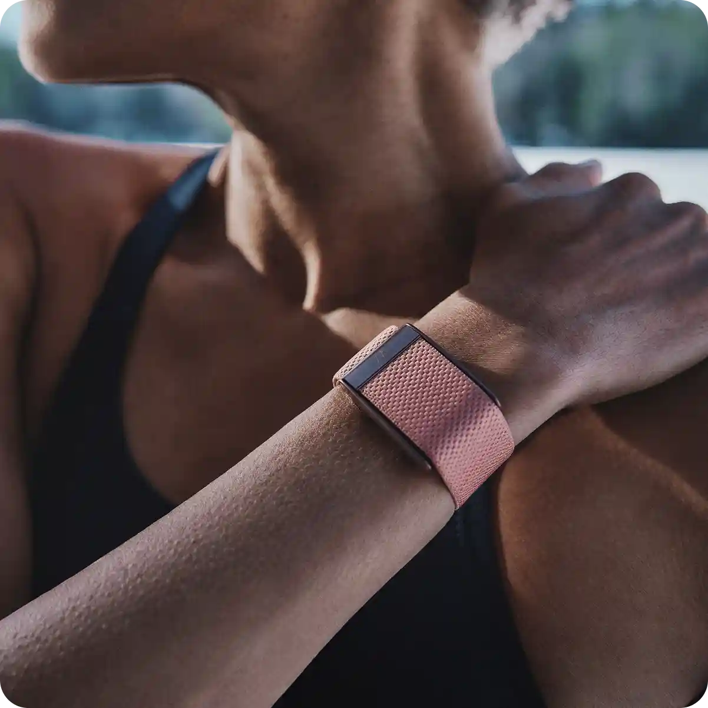
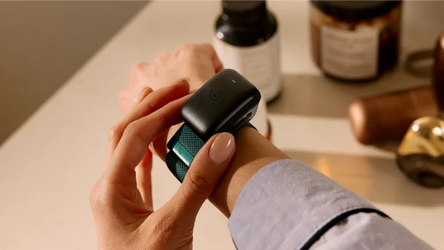
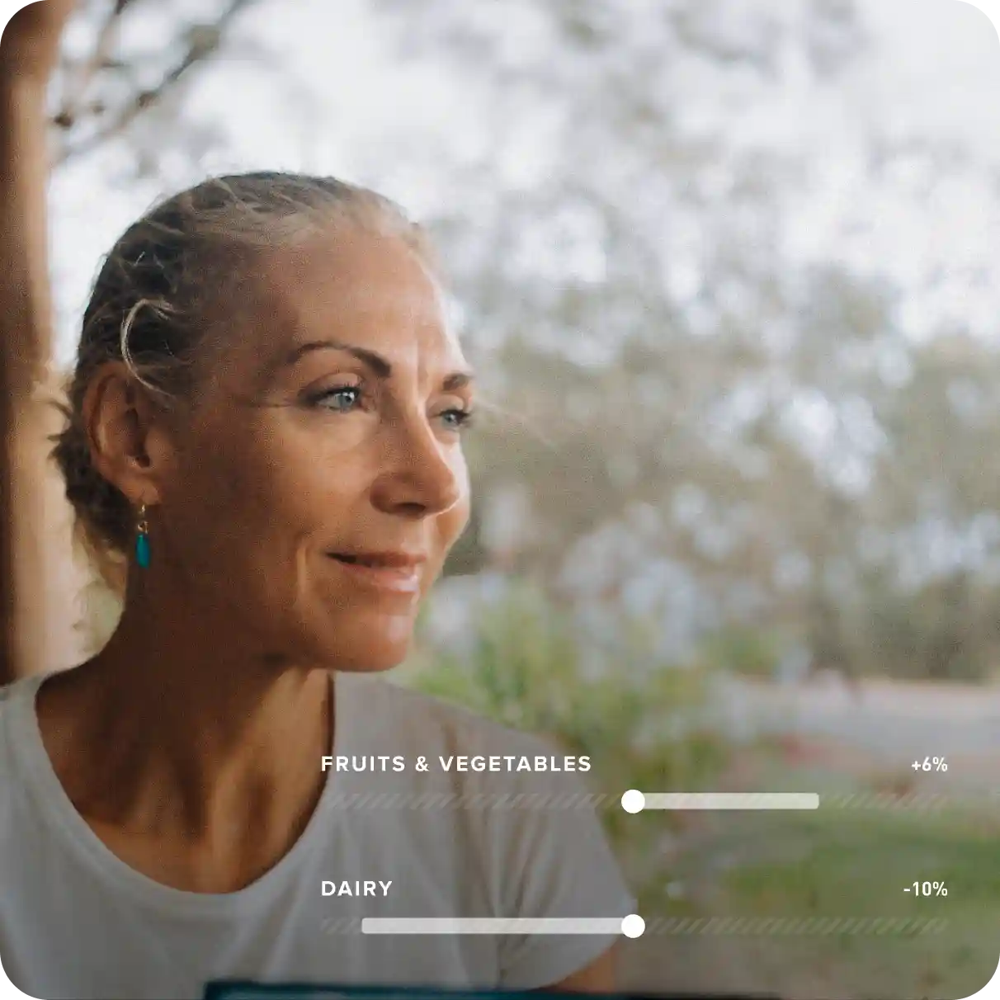

Why D'Vync
Nothing to distract you
D'Vync has no screen, so there are no pings, buzzes or notifications pulling you out of the moment. Just a light band you forget you're wearing.
It picks up your workouts and your sleep on its own, so there's nothing to start, stop or tap.

Every signal that matters
D'Vync tracks the measures research ties most closely to your health, from heart rate variability and resting heart rate to sleep stages, breathing and skin temperature, then turns them into three clear scores every day.
Explore the metricsMake it look like you
Dozens of bands in knit, leather, mesh and sport finishes, with clasps in silver, gold and black. Swap them in seconds to match the gym, the office or a night out.
Shop accessories
Charge it without taking it off
Slide the waterproof battery pack onto your band and keep going. You never lose a night of sleep data, a workout or a morning swim.
Most trackers look back. D'Vync looks ahead.

See what really works for you
Pick the habits you want to test, from caffeine and screen time to meal timing and supplements. D'Vync shows how much each one helps or hurts your sleep and recovery.
Get coached toward your goals
Choose a focus for the week, whether that's building fitness, sleeping better or easing stress.
Then get daily guidance on how hard to train, when to go to bed and which habits to keep, all based on your own data.
Ready when you are.
Start with a free month. Keep the plan that suits you, or send it back.